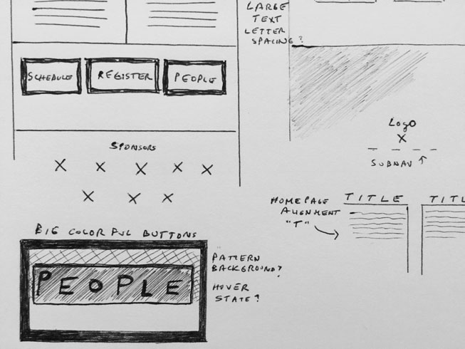
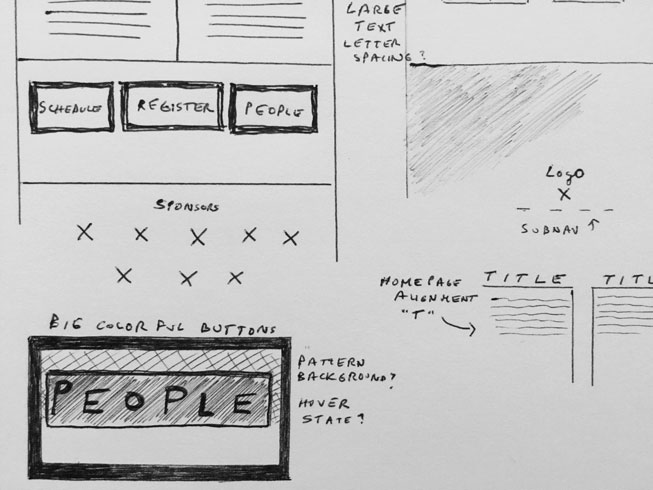
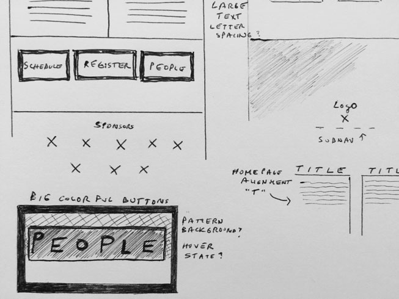

The primary audience for GROK are creative professionals: designers, developers, musicians, artists, writers, etc., who are looking for an alternative to other large-scale events that feature well-known presenters in lecture or workshop formats, and instead prefer a small event where they can develop relationships and real conversations with other professionals.
The brand for GROK is that of an “un-conference.”Fun, quirky, personable, and doesn’t take itself too seriously, yet possesses a level of professionalism and quality that sets it apart from other events. Event swag, signage, and other materials are cleanly, professionally designed, and show an appreciation to detail. Word-of-mouth about this event is positive and strong, and most previous attendees highly recommend the event to others.

What you see below (below left) is an example of some variables I created using SASS, a CSS extension language. I created variables for the colors so I could quickly use them throughout the code without having to repeatedly reference the hexadecimal colors.
I also created a few 'mixins’ using SASS (below right), which apply multiple properties to an element at time. In this case, I used the mixin to ensure consistent margin and padding for the large buttons on the homepage.